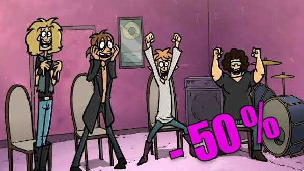
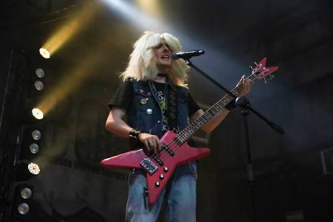
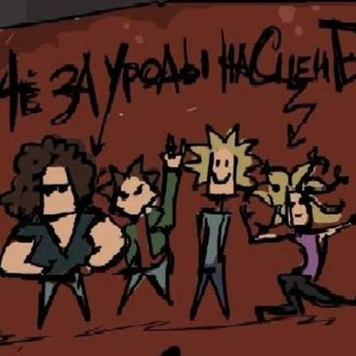
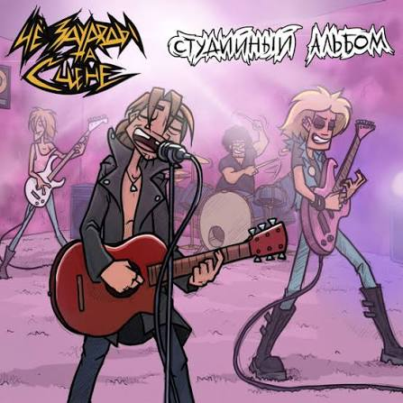
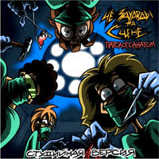

HEAVY METAL MAGAZINE / ISSUE 04
RUSSIAN ANIMATION · HEAVY METAL
THOSE MONSTERS ON STAGE

NO RULES. JUST NOISE.
Those Monsters On Stage (ЧёЗаУродыНаСцене) is a rock and heavy metal band from the Russian animated web series Metal Family.
Created by Alina Kovaleva and Dmitry Vdovenko, the band originally existed as part of the animated universe.
Founded by Ches and Glam in their youth, the fictional band became a real musical project because of its growing fan community.

Their music is inspired by 1980s glam metal and hard rock, including bands like Twisted Sister.
Released in 2024
Genre: Heavy Metal / Hard Rock
Smell Like Cherry

Свет (Light)

Патологоанатом (Pathologist)

The initiator of the band. Rhythm guitarist and lead singer. Later replaced by Leo.
The soul guitarist of the band. Later Lordi took over the bass while Glam withdrew.
Bassist and live lead guitarist.
Drummer of the band.
Rhythm guitar and some lead vocals. Co-creator of Metal Family and the voice of Ches.
Bass guitar and music collaborator for Glam.
Lead guitarist, arranger, and instrumental creator.
Drummer.
01 / СВЕТ (LIGHT)
A song from the band's studio album. ------The song before separate.
HEAVY METAL / RUSSIAN UNDERGROUND